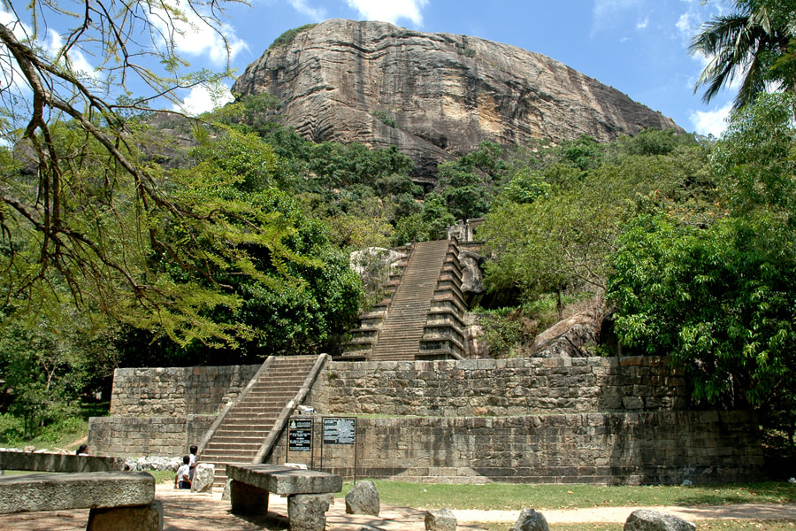

North Western Province is a province of Sri Lanka. The districts of Kurunegala and Puttalam formulate Wayamba. Its capital is
Kurunegala, which has a population of 28,571. The province is known mainly for its numerous coconut plantations.
Other main towns in this province are Chilaw and Puttalam , which are both small fishing towns. The majority of the population
of Wayamba province is of Sinhalese ethnicity. There is also a substantial Sri Lankan Moor minority around Puttalam and Sri Lankan
amils in Udappu and Munneswaram. Fishing, prawn farming and rubber tree plantations are other prominent industries of the region.
1. Yapahuwa Rock Fortress
Yapahuwa was one of the ephemeral capitals of medieval Sri Lanka. The citadel of Yapahuwa lying midway between Kurunagala and Anuradhapura
was built around a huge granite rock rising abruptly almost a hundred meters above the surrounding lowlands.
In 1272, King Bhuvenakabahu transferred the capital from Polonnaruwa to Yapahuwa in the face of Dravidian invasions from South India,
bringing the Sacred Tooth Relic with him. Following the death of King Bhuvenakabahu in 1284, the Pandyans of South India invaded Sri Lanka
nce again, and succeeded in capturing Sacred Tooth Relic. Following its capture, Yapahuwa was largely abandoned and inhabited by Buddhist
monks and religious ascetics.
The rock fortress complex of Yapahuwa is situated in the North Western Province, Sri Lanka. It is approximately between southeast of Mahawa
midway Kurunegala and Anuradhapura. The original name of this Buddhist Heritage is Yapawwa, but now this is called as Yapahuwa which is a
kind of distortion of its genuine etymological sense.

Yapahuwa served as the capital of Sri Lanka in the latter part of the 13th century (1273–1284). Built on a huge, 90 meter high rock boulder
n the style of the Sigiriya rock fortress, Yapahuwa was a palace and military stronghold against foreign invaders.
The palace and fortress were built by King Buvanekabahu I (1272–1284) in the year 1273. Many traces of ancient battle defences can still be
seen, while an ornamental stairway, is its biggest showpiece. On top of the rock are the remains of a stupa, a Bodhi tree enclosure, and a
rock shelter/cave used by Buddhist monks, indicating that earlier this site was used as a Buddhist monastery, like many boulders and hills in the area.
There are several caves at the base of the rock. In one of them there is a shrine with Buddha images. One cave has a Brahmi script
inscription. At the southern base of the rock there is a fortification with two moats and ramparts. In this enclosure there are the
remains of a number of buildings including a Buddhist shrine. There is also a Buddhist temple called Yapahuwa Rajamaha Vihara built
during the Kandyan period.
2. Panduwasnuwara Kingdom
Panduwasnuwara is an ancient capital, situated in Kurunegala District, Sri Lanka. It is said to be the controlling centre known as
Parakramapura of Dakkhinadesa (South Country) in the 12th century, when it was ruled by Parakramabahu.The remaining ruins of the ancient
kingdom still can be seen at Kotampitiya area which lies along Wariyapola-Chilaw main road about 19 km (12 mi) away from Wariyapola
town.
The current site has been identified as Parakramapura, the city of Dakkhinadesa, founded by king Parakramabahu the great when he was
the sub king of the territory, and called as Panduwasnuwara presently.
Due to its name this site is erroneously identified by the locals as the ancient capital of king Panduwasadeva who ruled the country in
504 BC to 474 BC. They believe that the structure known as Chakrawalaya which is situated in the site as the ektemge (a circular tower)
where princess Unmada Chitra was confined by her brothers and also a nearby village called Dorabawa to be the Doramadalawa village where
prince Pandukabhaya spent his childhood. But still there is no archaeological evidence to prove such stories.
As the Successor of his uncle king Kirti Sri Megha, prince Parakramabahu became the ruler of Dakkhinadesa in 1140 A.D.
It was the first capital of Parakramabahu and one of the three discrete kingdoms into which the Island was divided. Historical e
vidences prove that king Parakramabahu had made steps to develop the infrastructure and other common facilities in the ruling
territory. During this time period he had constructed a separate tooth temple at Panduwasnuwara Raja Maha Vihara premises for tooth
relic of Buddha to keep it safe.
After series of successful battles with his enemies Parakramabahu managed to conquer the control of entire nation and
moved to Polonnaruwa where his new capital was built. The tooth relic of Buddha was also brought with him as the reputed symbol
of principality.
3. Ethugala
Kurunegala District is in the North-Western Province of Sri Lanka, locating it in the middle of the country.
Many of the tourist destinations of these districts are based on mountain summits, caves, and sacred temples.
Athugala is one of the prominent landmarks of Kurunegala. The locals use the name of Athugalpuraya to identify the town.
The rock has derived its name as the rock is in the shape of an elephant and is 325 meters tall.
There is a myth of the local in the vicinity that the rock has obtained such formation due to animals turning into rocks not being
able to withstand the severe drought.
There is a temple on the top of the rock and also, a big Samadhi Buddha statue overlooking the city of Kurunegala though there is a
temple on the top of the cliff, individuals from many faiths visiting the temple to enjoy the hike and the adventurous journey
towards the top of the mountain.
One could use the stairs to reach the top of the mountain or could use the vehicle to climb up. Hiking your journey to the top of the
mountain is more rewarding than using the car to reach the top.
Hiking towards the top of the hill is preferred by many young and old individuals.The best time to start hiking up the rock is
during or after the sunset, as it would give a panoramic view of the Kurunegala city, with the sun setting off coloring the sky
in the shades of pink and purple, the busy lights of the vehicles begin to appear followed by the bright lights from the shops
and other parts gives a breathtaking view.
As you walk to the top of the mountain, you would be able to get a clear glimpse of the snow-white Buddha statue, which is seen as
floating from afar.
4. Anawilundawa Wetland Sanctuary
Situated between Sri Lanka’s major towns of Chilaw and Puttalam, the Anawilundawa Wetland Sanctuary covers an area of 1,397
hectares and is one of Sri Lanka’s six designated Wetlands of International Importance (or “Ramsar Sites”, named for the International
Ramsar Convention signed in 1971).
The sanctuary is considered unique for its collision of three distinct eco-systems: the forest wetlands
(including the mangrove- and freshwater-swamps); the coast’s saltwater ecosystem; and the freshwater lakes. This exceptional melding
of environments has resulted in the creation of a unique ecological nesting and breeding grounds for hundreds of bird species.
The sanctuary benefits from an ancient system of giant manmade tanks built in the 12th century, each connected to the other and working
in tandem to form a complex irrigation system that sustains its paddy fields and local vegetation, while simultaneously creating a
natural habitat for the birds that build their homes in the area. The tanks are also vital for the survival of vulnerable species of
fish, mammals, reptiles and amphibians.
The Wetlands are home to more than 150 species of birds; 20 species of mammals 70 species of butterflies; and more than 50% of Sri
Lanka’s freshwater fish species. To spot the rarer migratory birds that visit the area, the sanctuary is best visited between October
and April. It is an ideal attraction for birdwatching, hiking and boat-ride adventures, and the area is quickly becoming one of Sri
Lanka’s most important ecotourism sites.
Some of the Bird species found here are a large breeding colony of Herons, the Open-bill, Great cormorant, White ibis, Egret, Stalk,
Pheasant tailed jacna and the Purple swamp hen. A total of 20 species of mammals have been recorded here, this includes the Rusty
spotted cat, Fishing cat, the Indian otter, Slender loris, Toque monkey and 74 species of butterflies. Most endemic and resident
birds can be observed right through the year while the migrants are best seen between the months of October and April.
Anawilundawa Bird Sanctuary is a great favourite amongst bird watchers and nature lovers, who come here to spot rare birds, watch their
behavior in their natural environment and indulge in some great photography.
.jpg) The Wetlands are home to more than 150 species of birds; 20 species of mammals 70 species of butterflies; and more than 50% of Sri
Lanka’s freshwater fish species. To spot the rarer migratory birds that visit the area, the sanctuary is best visited between October
and April. It is an ideal attraction for birdwatching, hiking and boat-ride adventures, and the area is quickly becoming one of Sri
Lanka’s most important ecotourism sites.
The Wetlands are home to more than 150 species of birds; 20 species of mammals 70 species of butterflies; and more than 50% of Sri
Lanka’s freshwater fish species. To spot the rarer migratory birds that visit the area, the sanctuary is best visited between October
and April. It is an ideal attraction for birdwatching, hiking and boat-ride adventures, and the area is quickly becoming one of Sri
Lanka’s most important ecotourism sites.